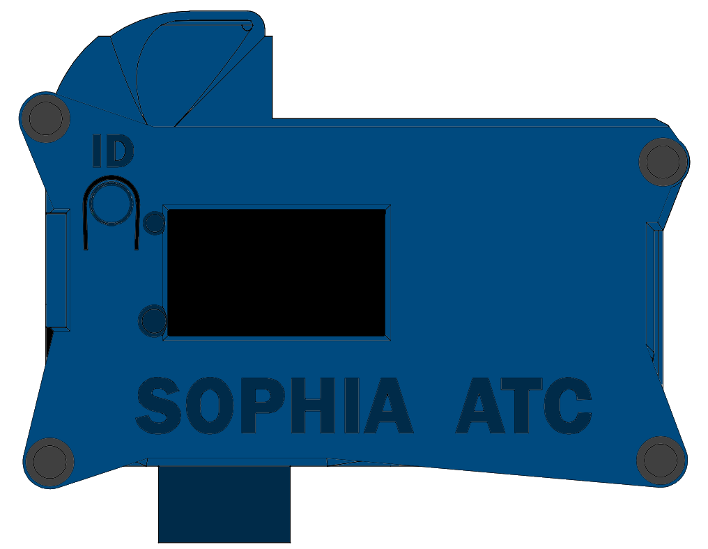
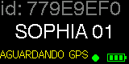
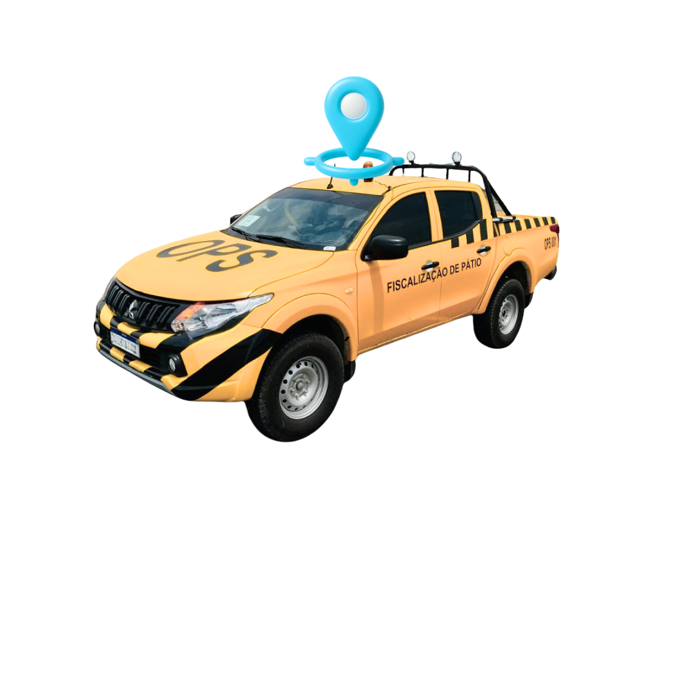
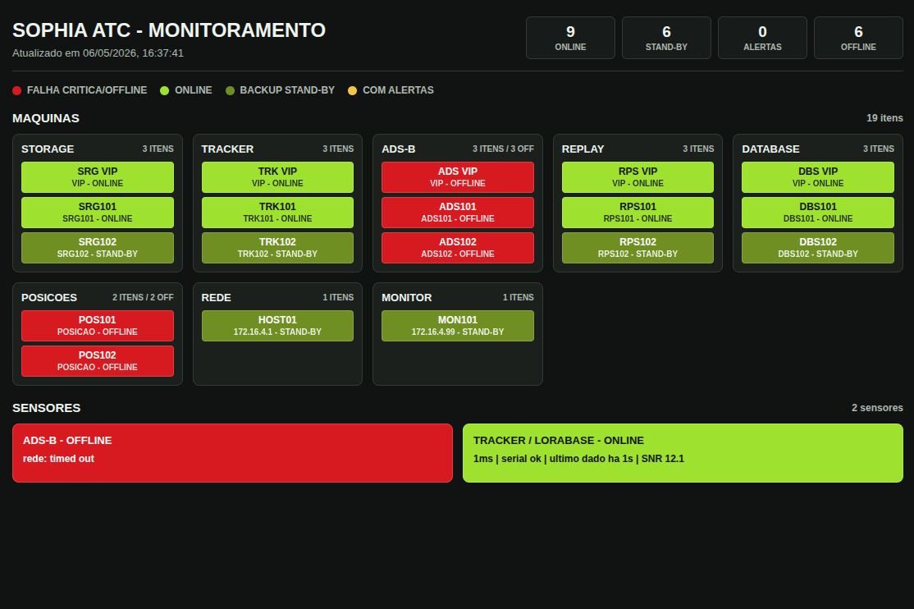
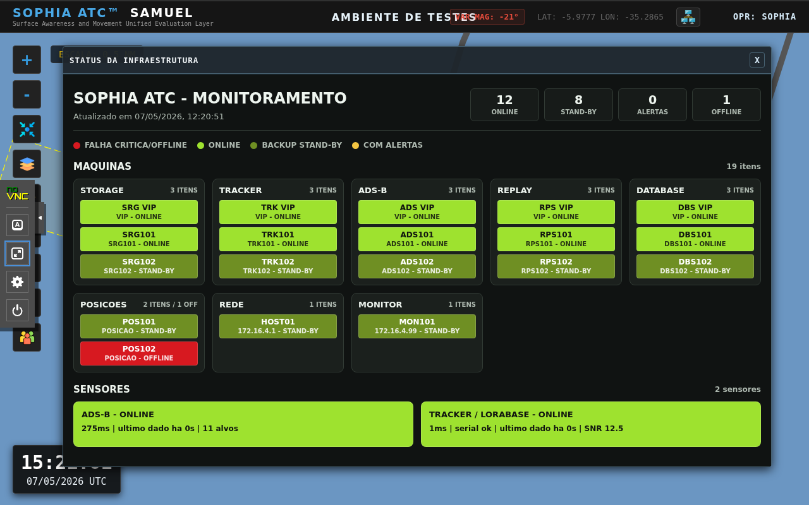

Offline Geofencing Intelligence
If communication with the base is lost, onboard logic keeps local protection and confirms incursions through consecutive reads before triggering visual and audible alarms.
Runway Incursion Prevention
Advanced Surface Tracking and Airport Situational Awareness System.
Surface Awareness and Movement Unified Evaluation Layer. A real-time solution to monitor ground vehicles and aircraft, with direct operational focus on runway incursion mitigation.

SOPHIA SAMUEL combines surface tracking, a lightweight graphics engine, and operational alerts to eliminate blind spots in movement areas and expand tower situational awareness.
If communication with the base is lost, onboard logic keeps local protection and confirms incursions through consecutive reads before triggering visual and audible alarms.
Compact telemetry and two-way commands with low latency for vehicle ID updates, alert activations, and operational calls.
GOES-19 imagery is integrated directly into the radar videomap, including layer-expiration awareness for operators.
Lightweight HTML5 Canvas rendering with native ATC tools and fluid performance even on legacy environments.
Browser-based vector editing for runways, taxiways, and protection zones, with automatic scenario-property persistence.
Continuous event recording and precise incident reconstruction for operational investigation and controller training.
The TRACKER runs with continuous telemetry and direct visual interaction on the device itself. If communication with the base is lost, internal geofencing fallback keeps vehicles and aircraft protected with local confirmation and alarm logic.
Identification and status: vehicle name, base state, GPS state, and ingress/incursion events shown directly on the tracker display.
Operational alerting: visual and audible cues for incursions, ATC RADIO calls, and control-command acknowledgment.
Link-loss resilience: protection remains active in the tracker even if suite communications fail.


Tracker screen: waiting for GPS.

Monitor vehicles in real time, protect operations, and improve situational awareness for ATS units, airport administration teams, and vehicle drivers.
The suite provides monitoring for network equipment and services, plus a high-availability architecture with server and sensor dualization to preserve operational continuity.


Operational interface, zone-authorization management, and runway-incursion scenarios.


The platform follows air-navigation logic: fast reading, consistent alerting, event traceability, and practical decision support in critical environments.